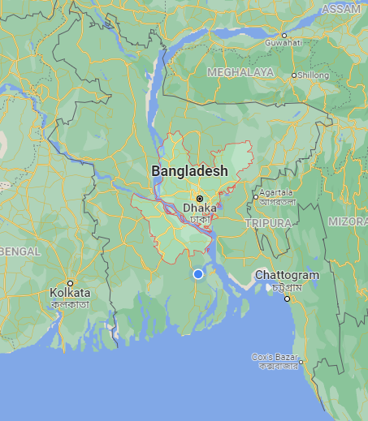

ঢাকা/DHAKA
ঢাকা বিভাগ বাংলাদেশ এর আটটি প্রশাসনিক বিভাগের অন্যতম এবং বাংলাদেশের রাজধনী । এটি বাংলাদেশের কেন্দ্রীয় অঞ্চলে অবস্থিত। বর্তমানে ঢাকা ও
বরিশাল বিভাগের সাথে সীমান্তবর্তী কোন জেলা নেই৷ আয়তনে ঢাকা বিভাগের বৃহত্তম জেলা টাঙ্গাইল জেলা। ঢাকা বিভাগ ৪টি সিটি
কর্পোরেশেন, ১৩টি জেলা, ৫৮টি পৌরসভা, ১২৩টি উপজেলা, ১,২৩৯টি ইউনিয়ন পরিষদ, ১২,৭৬৫টি মৌজা, ৫৪৯টি
ওয়ার্ড, ১,৬২৩টি মহল এবং ২৫,২৪৪টি গ্রাম নিয়ে গঠন করা হয়েছে।

নামকরণের ইতিহাস
ঢাকার নামকরণের সঠিক ইতিহাস নিয়ে ব্যাপক মতভেদ রয়েছে। কথিত আছে যে, সেন বংশের রাজা
বল্লাল সেন বুড়িগঙ্গা নদীর তীরবর্তী এলাকায় ভ্রমণকালে সন্নিহিত জঙ্গলে হিন্দু দেবী দুর্গার একটি বিগ্রহ
খুঁজে পান। দেবী দুর্গার প্রতি শ্রদ্ধাস্বরূপ রাজা বল্লাল সেন ঐ এলাকায় একটি মন্দির প্রতিষ্ঠা করেন।
যেহেতু দেবীর বিগ্রহ ঢাকা বা গুপ্ত অবস্থায় খুঁজে পাওয়া গিয়েছিলো, তাই রাজা, মন্দিরের নাম রাখেন
ঢাকেশ্বরী মন্দির। মন্দিরের নাম থেকেই কালক্রমে স্থানটির নাম ঢাকা হিসেবে গড়ে ওঠে।
আবার অনেক ঐতিহাসিকের মতে, মোঘল সম্রাট জাহাঙ্গীর যখন ঢাকাকে সুবাহ বাংলার রাজধানী হিসেবে
ঘোষণা করেন; তখন সুবাদার ইসলাম খান আনন্দের বহিঃপ্রকাশস্বরূপ শহরে “ঢাক” বাজানোর নির্দেশ দেন।
এই ঢাক বাজানোর কাহিনী লোকমুখে কিংবদন্তির রূপ নেয় এবং তা থেকেই শহরের নাম ঢাকা হয়ে যায়।
এখানে উল্লেখ্য যে, মোঘল সাম্রাজ্যের বেশ কিছু সময় ঢাকা সম্রাট জাহাঙ্গীরের প্রতি সম্মান জানিয়ে
জাহাঙ্গীরনগর নামে পরিচিত ছিলো।
ইতিহাস ও ঐতিহ্য
ধারণা করা হয়, কালের পরিক্রমায় ঢাকা প্রথমে সমতট, পরে বঙ্গ ও গৌড় প্রভৃতি রাজ্যের অন্তর্ভুক্ত ছিলো। খ্রিষ্টীয় ১৩শ
শতাব্দীর শেষের দিকে মুসলমানেরা ঢাকা দখল করে। মোঘল সম্রাট জাহাঙ্গীরের ফরমান অনুযায়ী ১৬ জুলাই ১৬১০
খ্রিষ্টাব্দে ঢাকাকে সুবাহ বাংলার রাজধানী ঘোষণা করা হয়। সম্রাট জাহাঙ্গীর-এর নাম অনুসারে রাজধানীর নাম
জাহাঙ্গীরনগর রাখা হয়। সম্রাট জাহাঙ্গীরের জীবিতকাল পর্যন্ত এ নাম বজায় ছিলো।
এর আগে সম্রাট আকবরের আমলে বাংলা-বিহার-উড়িষ্যার প্রাদেশিক রাজধানী ছিলো বিহারের রাজমহল। সুবা বাংলায় তখন
চলছিলো মোঘলবিরোধী স্বাধীন বারো ভূইঁয়াদের রাজত্ব। বারো ভূইয়ার নিয়ন্ত্রণ থেকে বাংলাকে করতলগত করতে ১৫৭৬
থেকে ১৬০৫ খ্রিষ্টাব্দ পর্যন্ত বারবার চেষ্টা চালানো হয়। এরপর সম্রাট জাহাঙ্গীরের শাসনামলে ১৬০৮ খ্রিষ্টাব্দে ইসলাম
খান চিশতীকে রাজমহলের সুবেদার নিযুক্ত করেন। তিনি ১৬১০ খ্রিষ্টাব্দে বাংলার ভৌগোলিক অবস্থান বিবেচনা করে
রাজধানী রাজমহল থেকে সরিয়ে ঢাকায় স্থানান্তর করেন।
সুবেদার ইসলাম খান চিশতী দায়িত্ব নেবার মাত্র পাঁচ বছরের মধ্যে বারো ভূঁইয়ার পতন ঘটে ও বর্তমান চট্টগ্রামের কিছু
অংশ বাদে পুরো সুবে বাংলা মোগল সাম্রাজ্যের অধীনে চলে আসে।
১৬১০ খ্রিষ্টাব্দে ঢাকা সুবা বাংলার রাজধানী হলেও সুবাহ বাংলার রাজধানী বারবার পরিবর্তন করা হয়েছে। ১৬৫০ খ্রিষ্টাব্দে
সুবেদার শাহ সুজা রাজধানী আবার রাজমহলে স্থানান্তর করেছিলেন। শাহ সুজার পতনের পর ১৬৬০ খ্রিষ্টাব্দে সুবেদার
মীর জুমলা আবার রাজধানী ঢাকায় স্থানান্তর করেন। এরপর বেশ কিছুকাল ঢাকা নির্বিঘ্নে রাজধানীর মর্যাদা ভোগ করার
পর ১৭১৭ খ্রিষ্টাব্দে সুবেদার মুর্শিদ কুলি খান রাজধানী মুর্শিদাবাদে স্থানান্তর করেন। এরপর ঢাকায় মোঘল শাসনামলে
চলতো নায়েবে নাজিমদের শাসন, যা চলেছিল ১৭৯৩ সালে ব্রিটিশ শাসন শুরু হবার আগে পর্যন্ত। ব্রিটিশরা রাজধানী
হিসেবে কলকাতাকে নির্বাচিত করলে ঢাকার গুরুত্ব আবারো কমতে থাকে।
এরপর দীর্ঘকাল পরে ১৯০৫ খ্রিষ্টাব্দে ঢাকা আবার তার গুরুত্ব ফিরে পায়। বঙ্গভঙ্গের পর ১৯০৫ সালে ঢাকাকে
আসাম ও বাংলার রাজধানী করা হয়। কংগ্রেসের বাধার মুখে ব্রিটিশ রাজ আবার ১৯১১ সালে রাজধানী কলকাতায়
ফিরিয়ে নেয়।